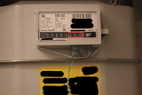
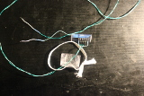
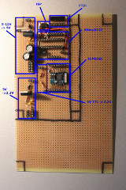
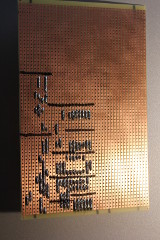
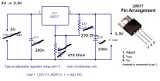
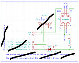
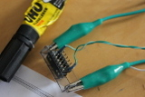
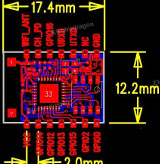
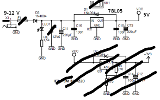
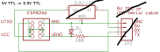

|

Fig.1: Gas meter Fig.3: Reed switch assembled Fig.5: Stripeboard circuit, modules Fig.7: Stripeboard circuit, back Fig.9: 5V downto 3.3V voltage regulator (Source: circuitstoday.com/few-lm317-voltage-regulator-circuits) Fig.11: TTL 5V downto 3.3V regulating circuit 2 (Source: hackaday.io/project/3110/logs) |

Fig.2: Reed switch Fig.4: ESP8266 pin-out (Source: electrodragon.com/product/esp8266-wifi-board-full-ios-smd/) Fig.6: Stripeboard circuit, front Fig.8: 9 to 12V downto 5V voltage regulator (Source: ulrichradig.de) Fig.10: TTL 5V downto 3.3V regulating circuit 1 (omited) (Source: blog.rayshobby.net) |
Gas usage monitoring with an ESP8266What? Got my hands on an ESP8266 WiFi-Module. These modules cost next to nothing (around 3 Eur from Chinese suppliers on eBay, and about 8 Eur from a German supplier, if you need them fast). I want to use them in order to monitor the gas usage for heating and water in my apartment. When? This is something I've wanted to do for a long time, ever since I figured something out about the gas meters (Elster BK-G4, Fig.1) installed nearly everywhere in the region I live. They have mechanical displays in which the digits are printed on wheels, which rotate every time the counter increments. Now, the wheel of the last digit, has been designed to be magnetic just where it shows zero. So the idea was to detect this by means of a reed switch(Fig.2) (a switch that closes, when a magnet is placed nearby and opens when it is removed). And then somehow get this information to my Linux server, which can keep track of the increments and generate (aesthetically pleasing, I hope) plots. Why? The primary reason for doing this are the ever increasing gas prices. In the past five years I've lived in Germany I've paid anywhere from between 30 to 110 Eur per month in gas fees. It depends on how much is used for heating, water, showering, etc... Furthermore there are little tricks to reduce gas consumption. For example: setting the boiler to a low temperature which is just so sufficient for showering, will enable you to mix in less cold water at the tap - which would otherwise waste the heat. My boiler also has a so-called "comfort function", which keeps about 1-2 liters of warm water all the time. This gives you warm water quickly, but can potentially waste a lot of gas. Having heaters turned up in rooms with the door closed results in the thermostat in the isle not registering the temperature increase. The boiler will just keep on running, heating up these rooms while the rest of the flat is cold. This wastes a lot of gas. In order to actually measure and verify this I need something to accurately show me the gas usage. This would also enable live computing of the cost. Background? As I've been planing this for a while, there have been some iterations in the project. The gas meter in my old apartment was located inside my home, in the isle. So my first attempt was to connect it to my wired (1-Wire, 1W) bus. I had 8-Bit Input/Output ICs for 1-Wire, but the problem is that they can only be polled every few milliseconds and one is likely to miss the short moment, in which the magnet on the counter wheel passes the reed switch and causes it to close. There used to be 1W-Counter-ICs from the 1-Wire manufacturer, but for some obscure reason they have quit producing them. The 1W-Counter-IC would have kept track of the number of times the magnet has passed and could have been polled at any time. The meter could have been read by computing the difference between two readings of the 1W-Counter-IC. So my first solution was to build my own counter. I used a standard Counter-IC (74HC590) combined with a Schmitt-Trigger (HEF40106). The Counter-IC was connected directly with the 8-Bit 1W-IO-Chip (8 wires). The Schmitt-Trigger serves the purpose of debouncing the reed switch - otherwise one increment of the gas meter could be counted multiple times, as the switch oscillates as the magnet approaches and moves away from the switch. This worked exceptionally well - for the electricity meter using it's impulse connector (compliant to S0, DIN 43864) instead of a reed switch - just not for the gas meter. It would count anywhere between 1 and 3 units per increment of the gas meter. Now, in the new apartment, the gas meter is located on the other side of the entrance door. I can't run a wired bus to the gas meter that easily anymore, either. So now I need a wireless solution and so I'm redesigning - and this time it's supposed to work. How? So now, incorporating all this, I will be using an ESP8266 WiFi-Module, which will be connected to a battery pack. The WiFi-Module does not support counting or interrupts - I don't want to learn how to reprogram it (yet) - so I will add an Attiny2313 micro-controller for the counting. This will enable me to do some more creative debouncing than with the Counter-IC and Schmitt-Trigger combination, i.e. allowing only one impulse per half of a second (the gas meter doesn't count any faster). That way I can do away with the issue of counting one impulse of the gas meter multiple times. The nice part about the WiFi-Module is that it handles the entire Wireless-LAN, physical, TCP/IP, Telnet layers directly on chip. It can be configured using AT-commands (similar to old mobile phones) and then provides a serial port. The Attiny2313 can be connected to this port and send characters back and forth. So all I need to do is configure the module to connect to my home Wireless-LAN, program the Attiny to count and tell me the number of increments, when I ask it to via the serial connection. Then my Linux server can poll it every once in a while and generate the plots and compute the expense. So much for theory. Progress? I'm trying to finish this project and I want it finished quickly. So instead of designing a pcb and going through the process of etching it, I've used a stripboard and started soldering directly onto it. The design is kept as modular as possible. A 9 to 12 Volt down to 5-Volt regulator circuit(Fig.8), a 5V down to 3,3V circuit(Fig.9), the Attiny and ISP-Connector, an FTDI-Connector (FTDI are USB TTL to Serial Adapters, for configuring the WiFi module and testing), a 5V to 3,3V Converter for the TTL-Lines of the WiFi-Module(Fig.11) and the WiFi-Module(Fig.4) itself. The reason for the 3,3V components is due to the WiFi-Module not being 5V tolerant. Each of these modules, or areas on the board, are not hard-wired and can therefore be connected any way I see fit. Once it works I will throw it in box, never ever touch it again and be done with it. I hope the battery packs from an old race car I have will keep it running for a while, as I have no power socket outside of my home, where the gas meter is located. |